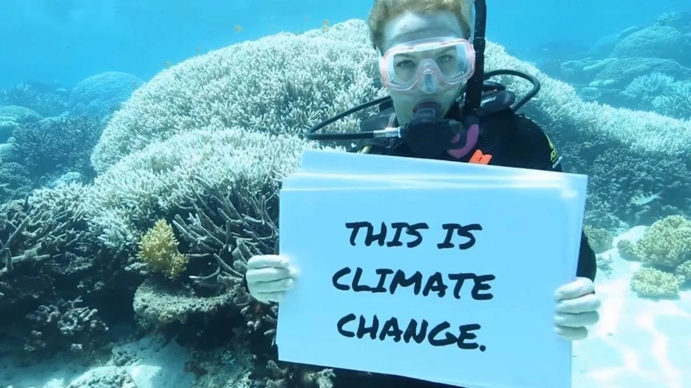

Petitions
1. Australian Marine Conservation Society: Ongoing petitions for preventing pollution that harms the Great Barrier reef and urging other climate actions.
Australian Marine Conservation Society Petition (link)
2. Greenpeace: Has petitions for halting new gas and coal projects that harm Reefs and contribute to climate change.
3. Petition to classify the Great Barrier Reef as endangered, which will encourage the action needed to protect it.
Petition for Classification of the Reef (link)
4. Petition for requesting Sussan Ley, Australia’s Federal minister of the environment to fund more coral sanctuaries and coral nurseries in badly affected areas of the Great Barrier Reef.
Petition for More Coral Nurseries (link)
5. Petition for the Australian government to provide a plan to save the Great Barrier Reef.
Great Barrier Reef Plan Petition (link)
To explore the history of conservation efforts for the Great Barrier Reef, please visit the History tab on our homepage. If you're interested in supporting the reef, there are many ways you can get involved. Browse through the sections on community-led conservation, political initiatives, donations, and petitions to learn how you can make a difference.